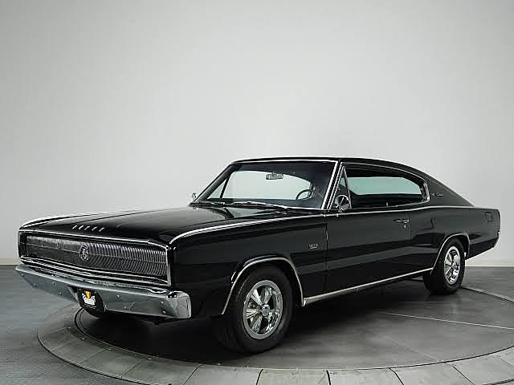

| Durante la prohibición de los años 20s en Estados Unidos, los fabricantes de licor buscaban autos veloces para huir de la policía por lo que comenzaron a modificarlos. Tras acabar la prohibición, comenzaron a usar estos carros modificados en las carreras, con lo que aumentó la demanda de vehículos más veloces | Inspirado por los autos modificados y con la creciente demanda, el primer muscle car real fue introducido en 1949. El Rocket 88 de Oldsmobile contaba con un motor V8 y la carrocería ligera de un Oldsmobile 76 de seis cilindros, lo que desde entonces definiría a este tipo de carros: un motor poderoso y una carrocería liviana. |
LA ERA DORADA DE LOS MUSCLE CARS |
|
|  | |
| CHARGER 1964 | En los años 60, las drag races o arrancones se volvieron muy populares, y los muscle cars también. Dodge Dart fue de los autos preferidos por sus 13 segundos en el cuarto de milla. Entre 1960 y 1970, Dodge sacó al mercado dos de los modelos que se mantienen vigentes hasta hoy en día y que se han vuelto un ícono: el Charger en el 64 Y EL CHALLENGER EN 1970. |
 |
|
| CHALLENGER 1970 |